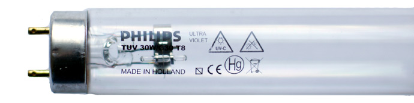

TUV 30W Philips бактерицидная лампа
Бактерицидная лампа TUV 30W Philips применяется при обеззараживании воды и воздуха в установках и оборудовании различных производителей.
Цена лампы TUV 30W - 430 рублей.

Бактерицидная лампа TUV 30W Philips
Общие характеристики ламп TUV 30W Philips
- Высокий световой поток
- Цоколь G13
- Форма колбы T8
- Основное применение - Дезинфекция
- Срок полезной службы 9000 ч
- Содержание ртути (мг)2.0 мг
- Штук в коробке 25
- Вес нетто 1 штуки 131 г
Электрические характеристики ламп TUV 30W Philips
- Исходная мощность лампы 30 W
- Мощность лампы 30 W
- Напряжение лампы 102 V
- Ток в лампе 0.37 A
Габариты ламп TUV 30W Philips
- Лиц. части цоколей напр. А 894.6 (max) мм
- Длина вставки В 899.3 (min), 901.7 (max) мм
- Общая длина С 908.8 (max) мм
- Диаметр D 28 (max) мм
Примечание: бактерицидные лампы TUV 30W производят излучение, опасное для глаз и кожи. Оборудование с ультрафиолетовыми лампами должно быть экранировано.
Чтобы приобрести бактерицидные лампы или за дополнительной информацией обращайтесь по телефону (495) XXX-XX-XX или электронной почте XXXXXXX@mail.ru